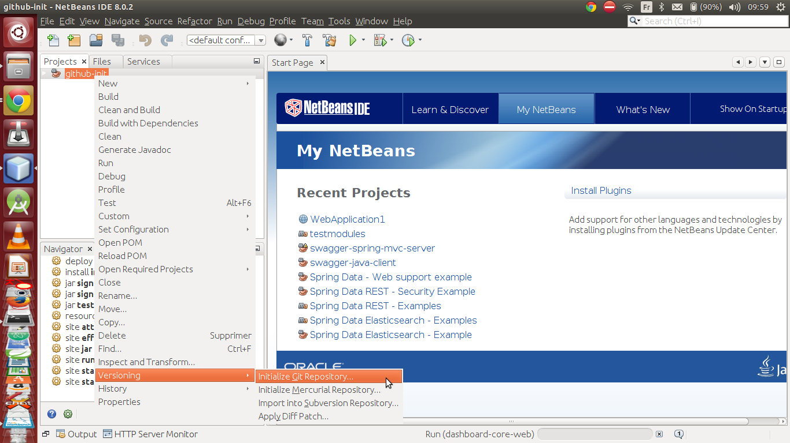
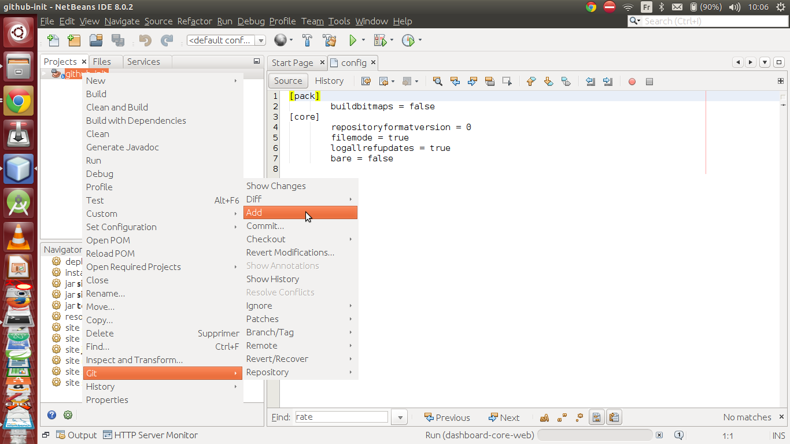
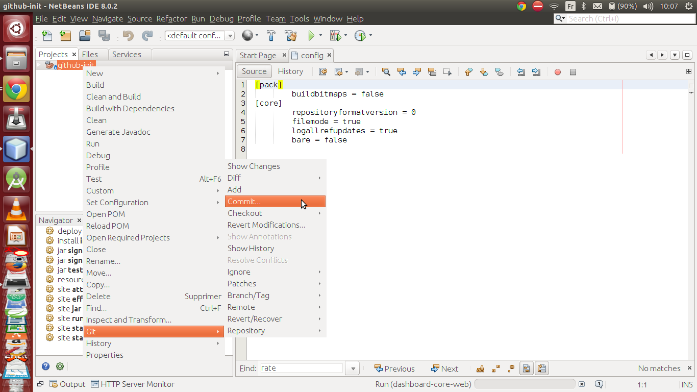
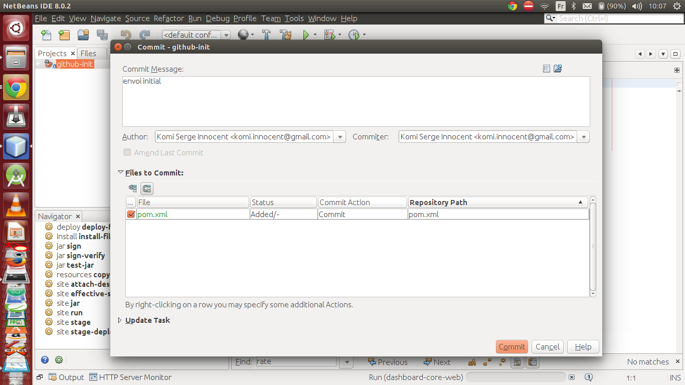
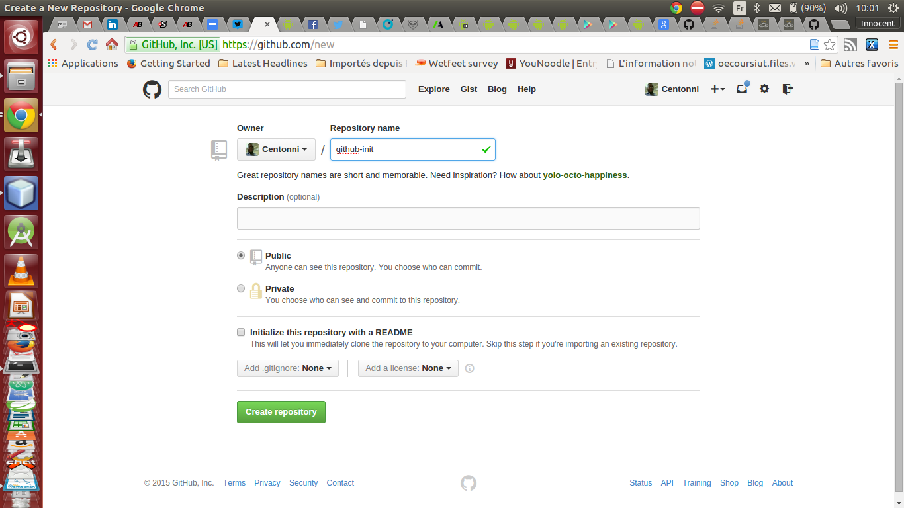
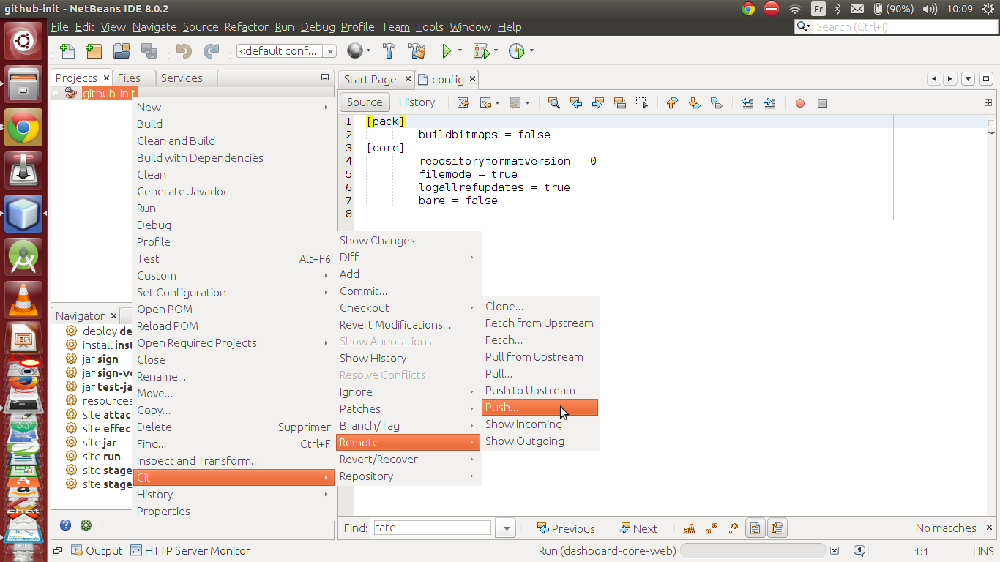
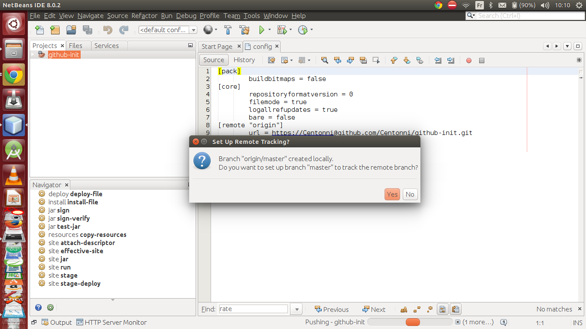

On est en 2015 et si vous êtes un développeur, impossible d'y échapper, github doit faire partie intégrante de votre boîte à outils tout comme les langages de programmation et les compilateurs.
Qu'est ce que github?
Github est un réseau social qui permet à ses utilisateurs de partager stocker et partager leurs travaux avec les autres utilisateurs, permettant à des personnes qui soit ne se connaissent pas, soit sont à des milliers de km de travailler sur un même projet.
Allez, je ne vais pas parler de github et de ses multiples fontionalités ici (peut-être le sujet d'un autre post), je vais vous montrer comment envoyer son premier projet sur github à partir de netbeans.
Créer un projet avec netbeans et l'héberger sur github
Je suppose que vous êtes familiers de netbeans, donc je vous laisse créer votre projet, peut importe le type (php,java,c ou c++). Après la création du projet, il faut initialiser un dépôt git local pour le projet, ce dépôt va permettre d'avoir un historique local des modifications apportées au projet.
Initialiser un dépôt local pour votre projet

Ajouter vos modifications à l'index de git et faite votre premier commit
Ajout des nouveaux fichiers à l'index de git

Commit:sauvegarder l'état du projet dans git

Message du commit

Créer un nouveau dépôt sur github
Si vous possédez un compte github, utilisez-le pour créer un nouveau repository, dans le cas contraire, créez un compte sur github afin de pouvoir héberger votre projet.

Envoyer votre projet sur github
Les captures suivantes vous permettent d'envoyer votre projet sur github à partir de netbeans.

Vous devez préciser à ce niveau préciser l'url de votre dépôt, qui devrait être de la forme https://[username]@github.com/[username]/[repository].git

À la fin du processus vous devriez avoir ce message ci-dessous

Vous pouvez dès lors aller sur votre page github pour constater que votre projet est maintenant hébergé!!